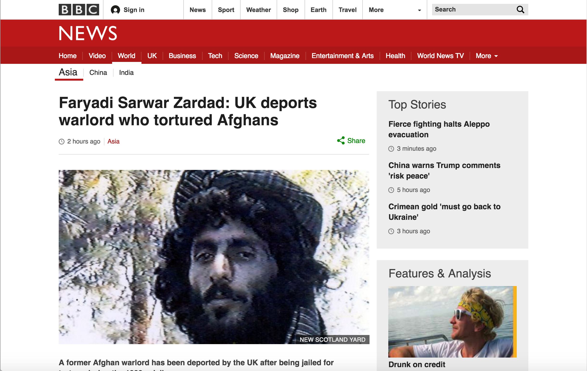
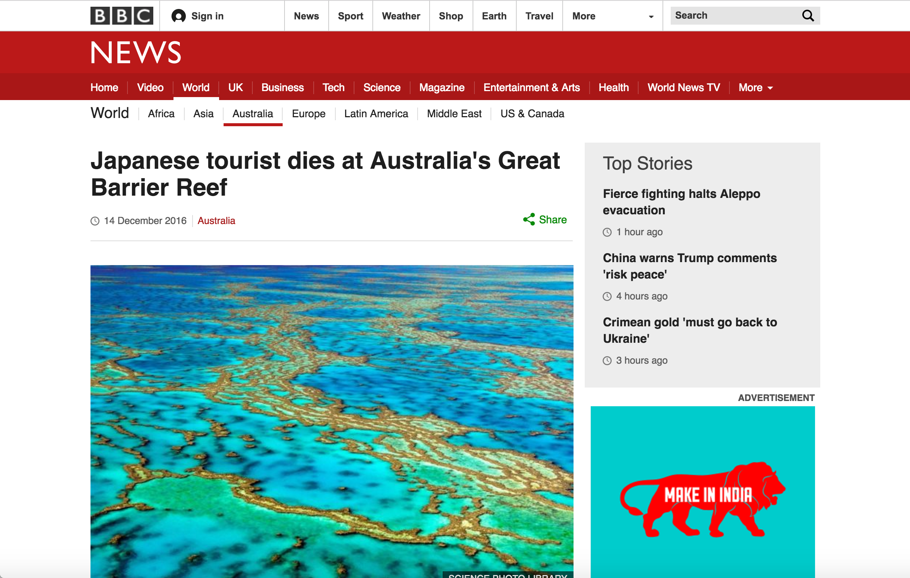
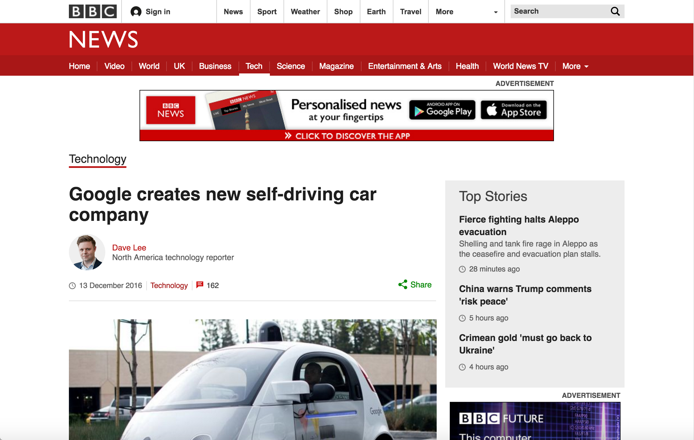
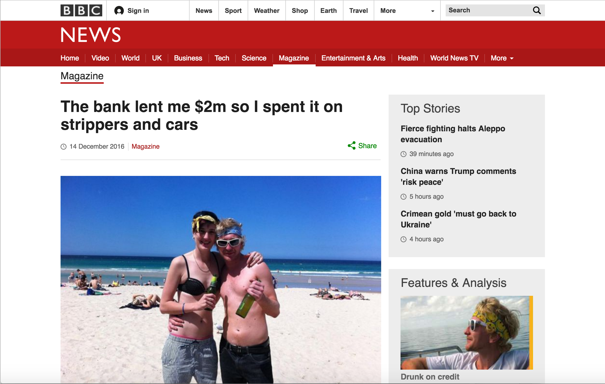

Toggle navigation
WP3: User and Context-centric Content Analysis
T3.3 Polarity and sentiment extraction (Demo)
News Repository
 Faryadi Sarwar Zardad: UK deports warlord who tortured Afghans
 Japanese tourist dies at Australia's Great Barrier Reef
 Google creates new self-driving car company
Film review: Rogue One is Star Wars for better and for worse
 The bank lent me $2m so I spent it on strippers and cars
 Film review: Rogue One is Star Wars for better and for worse
Film review: Rogue One is Star Wars for better and for worse